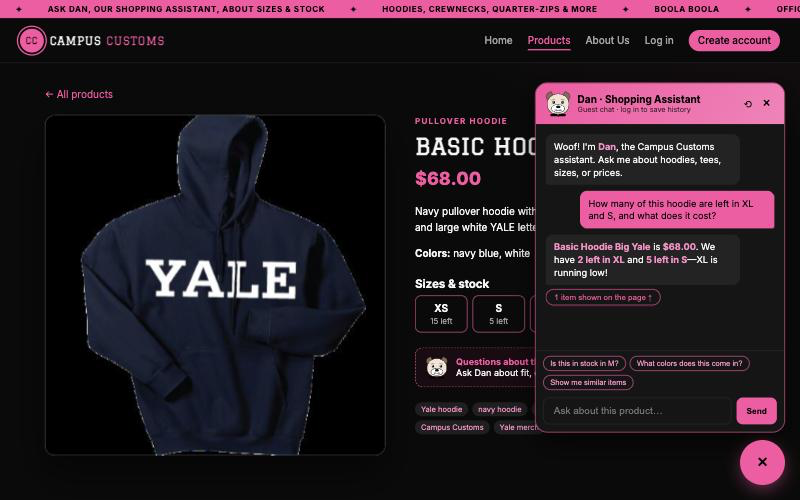
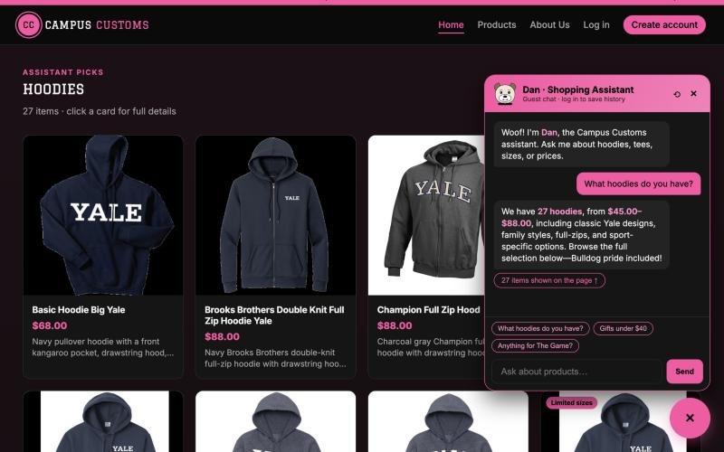
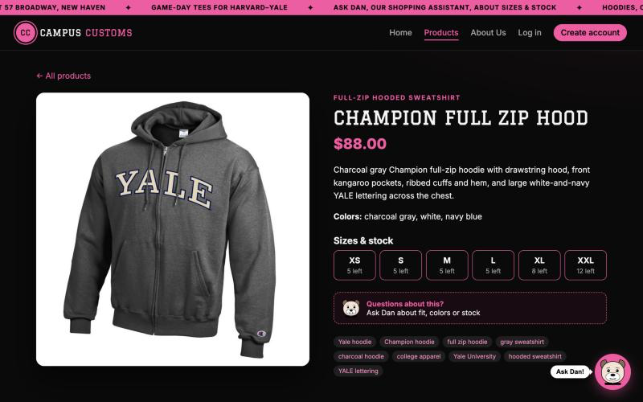
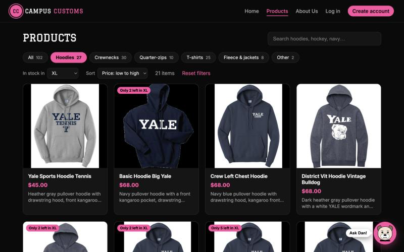

Chat returns accurate inventory and price from the database

This shows the agent identified the current product from page context, called its stock and price tools, and quoted exactly the database values:
| SQL result | price | size | quantity | Chat said |
|---|---|---|---|---|
| Basic Hoodie Big Yale | 68.0 | XL | 2 | $68.00 · 2 left ✔ |
| Basic Hoodie Big Yale | 68.0 | S | 5 | 5 left ✔ |
Category question shows dynamic product cards on the page

This shows that search results pass as structured data from the agent (product_ids) through the API (ProductCard[])
to the page. The 27 cards match the 27 catalogue rows whose name or type contains "hood".

Problem 9 usability feature: category, size-in-stock filter, sort and stock badges

/products?category=hoodies&size=XL&sort=price-asc).
It shows 21 items, cheapest first ($45.00 Tennis hoodie), with pink "Only 2 left in XL" badges.
This shows the filters and badges use live inventory. SQL finds exactly 21 hoodies with XL quantity > 0, the cheapest is Yale Sports Hoodie Tennis at $45.00, and Basic Hoodie Big Yale has 2 in XL, matching its "Only 2 left in XL" badge. ✔